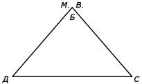

Беседа 3381 от 3877 · Беинса Дуно
Самовъзпитание
Добрата молитва.
Духътъ Божи.
Размишление.
Цвѣтята цъвтѣха.
Ще говоря за закона на самовъзпитанието. Законъ за самовъзпитанието или какво нѣщо е самовъзпитанието, какъ да работи и да възпитава себе си.
Всичкитѣ хора страдатъ отъ невъзпитаность. Малкитѣ деца, ако биха останали на тѣхъ, тѣ както идатъ въ живота, ако нѣмаше кой да имъ помогне, тѣ най-напредъ не знаятъ какъ да си избератъ храната. Майката ще приготви подходяща рѣдка храна, ще даде първитѣ правила какъ да започнатъ да се хранятъ. Децата сѫ много взискателни. Тѣ, като дойдатъ на земята, искатъ всѣки да имъ служи. Колкото души има въ кѫщи, отъ всичкитѣ искатъ служение. Каквото кажатъ – думата на две да не стане. Щомъ не се изпълни това, което желаятъ – веднага проявяватъ негодувание, веднага крѣскатъ, издаватъ единъ звукъ. Туй го наричатъ плачъ. Отъ негодувание, че не сѫ ги послушали, тия, голѣмитѣ генерали, веднага заплачатъ. То е наказание. Детето казва: „Какъ не разбирате Божественитѣ закони, че азъ съмъ дошълъ да ми служите, че вашето щастие, че щастието на баща ти, на майка ти зависятъ отъ мене. Ако не съмъ – нищо не може да стане. Ти стана баща най-голѣмъ, благодарение на мене. Азъ те произведохъ баща. Ти си майка, но азъ те направихъ майка. Ако азъ не съмъ – ти нищо не можешъ да направишъ“. Затуй първото дете казва: „Азъ, ако не бѣхъ се родилъ – никакъвъ братъ не щѣше да бѫдешъ“. Първото дете мисли, че всичко е направило въ свѣта. Вие всички мислите, (че) въ всичкитѣ хора има едно голѣмство. И най-малкото животно да го настѫпишъ – и то се надигне. Бутнете единъ паякъ. Той се спре, надигне се на краката си, казва: „Разбирашъ азъ кой съмъ. 6 крака имамъ, знаешъ какво мога да направя“. Знаете ли какво е самозащита или не? Мене ми разправяше единъ, че единъ отъ голѣмитѣ паяци го накаралъ да излѣзе отъ стаята. Скача отъ единиятъ край до другиятъ, премѣта се изъ стаята.
Сега вие живѣете въ единъ свѣтъ и мислите, че той е уреденъ. Не е уреденъ. Ако бѣше уреденъ, не щѣше да има. Богъ казва: „Правя нова земя и ново небе“. Подъ „старото небе“ и „старата земя“ разбира стариятъ порядъкъ на земята, които сега изживѣватъ последнитѣ дни. Туй ще се смѣни, както се смѣняватъ нощьта съ деня. Сегашниятъ порядъкъ, въ който ние живѣемъ, е нощь. Писанието казва: „Ето, мина нощьта, наближава деньтъ“. Ще идемъ въ новиятъ порядъкъ, дето има свѣтлина. Казвамъ: Всичкитѣ нещастия, които сѫществуватъ въ свѣта, се дължатъ на тъмнината. Въ тъмнината, която има въ насъ, всички прегрѣшения все въ тъмнината ставатъ. Въ свѣтлината прегрѣшения не може да ставатъ. Нѣма сега да се спирамъ да обяснявамъ какво значи „грѣхъ“. Грѣхътъ – това е едно наше понятие. Нарушение на единъ законъ. Богъ е поставилъ известни закони. Когато нарушаваме законитѣ на природата, на физическия свѣтъ, имаме едни последствия. Когато нарушаваме законитѣ на духовния свѣтъ, имаме други последствия. Когато нарушаваме законитѣ на умствения свѣтъ, имаме трети последствия. И тамъ може да се нарушатъ законитѣ. Всѣки, който наруши единъ Божественъ законъ, той изчезва отъ този свѣтъ. Ние сме въ физическото поле. Не сме въ онзи свѣтъ, дето тече всичко по медъ и масло. Ние сме въ единъ свѣтъ, дето се мѫчимъ. Ако погледнемъ на цѣлата природа, дето живѣемъ, то е вѣчна борба, вѣчно робство тукъ. Нѣма нито едно сѫщество, което да е свободно. Има нѣщо въ насъ, което ни измѣня постоянно. Човѣкъ е билъ малко детенце, после постепенно той се измѣня. Кое е онова, което го измѣня отвѫтре? Човѣшкиятъ духъ трѣбва да расте и човѣшката душа трѣбва да се развива. Но тъй, както ние се развиваме, кой отъ насъ е доволенъ отъ туй състояние, което сега имаме? Всѣки усѣща, че му липсва нѣщо. Нѣкой казва, че не го оценяватъ. За да те оцѣнятъ, хората трѣбва да бѫдатъ съвършени. Какъ ще те оцени единъ човѣкъ? Ти искашъ нѣщо, което не съзнава(шъ). Влѣзете нѣкѫде, искате да има пиано, да ви посвирятъ добре. Тия хора едва знаятъ да попѣйватъ, нито пиано иматъ, нито модерно свирятъ. Вие казвате: „Нѣма ли нѣкой другъ, дъщеря ви или сина ви да свири?“ Казватъ: „Нѣма такива работи въ насъ“. Хората оратъ и сѣятъ. Казватъ: „Имаме си свои пѣсни, попѣваме по нѣкой пѫть. Други условия нѣмаме“. Нѣкой религиозенъ ще каже: „Нѣмате такива набожни картини на Св.Богородица, на Исусъ Христосъ, на Св.Никола, на Св.Георги, на Св.Петъръ“. Въ българитѣ има много светии, но Св.Драганъ нѣма, Св.Стоянъ нѣма, и Св.Панчо нѣма, и Св.Череша нѣма. Казватъ: „Колко е хубавъ образътъ на Христа тъй, като се моли“. Но художникътъ е турилъ тази форма. Той не е билъ тамъ да види какъ се е молилъ Христосъ. Той се молѣше денемъ. Въ тъмнината на художника му е дошълъ този образъ. Тогава казвате: „Колко хубаво се моли“. Това е наше сегашно понятие. Въ какво седи доброто? Въ молитвата. То седи въ това правилно поставяне на ума. Мисъльта ти да бѫде така свѣтла и чиста. После – онова правилно положение на сърдцето, да нѣма никакви горчиви чувства. После – въ постѫпкитѣ да нѣма нищо, (което) да те смущава. Три нѣща въ молитвата да имашъ. Молитвата учи умътъ ти да е пъленъ съ свѣтлина и сърдцето ти да е топло, ритмично да бие. Да чувствувашъ, че имашъ най-приятното разположение. Сега не разбирайте „удоволствие“, ами като си тѫженъ, да намѣришъ и въ самата тѫга (и) да видишъ, че има нѣщо хубаво. Умниятъ човѣкъ, като се заоблачи небето, вижда добрата страна. (Той) казва: „Тия облаци ще се превърнатъ на капчици, ще капнатъ по тревата и тревата ще израсте. Цвѣтята ще цъвнатъ, дърветата ще се полѣятъ, ще раждатъ хубави плодове“. Духне вѣтъръ (и) умниятъ човѣкъ вижда хубавото, казва: „Ще стане пречистване“. Онзи, който не разбира, казва: „Сега ли се намѣри, отде се намѣри? Заоблачи се – казва. Сега ли се заоблачи, не можеше ли свѣтло да е?“ Мнозина отъ васъ искате все да бѫдете щастливи. Че щастието на единъ пѣвецъ въ какво стои? То не е нѣщо материално. Пѣвецътъ, като пѣе хубаво, е щастливъ. Като (го) слуша, всѣки единъ казва: „Хубаво пѣе“. Още като е на сцената, тия хора му изпращатъ своитѣ хубави мисли. Казватъ: „Хубаво пѣе, искаме да слушаме, такъвъ пѣвецъ чакаме“. Тѣ сѫ му платили. Щомъ не пѣе хубаво, казватъ: „Защо не се приготви хубаво да пѣе, така ли се пѣе?“ Той, горкиятъ, започва да го стѣга сърдцето. Казва, че не вървѣло. За да се извини, казва, че времето било влажно, салонътъ билъ неотопленъ, публиката била студена. Дава си извинения. Тия нѣща сѫ наши залъгалки. Може да ви преведа примѣръ, но нѣкой пѫть ние сме смѣшни въ нашитѣ разбирания. Казвате: „Той много знае“. Азъ съмъ превождалъ този примѣръ и пакъ ще го преведа. Идва една съседка при другата и казва: „Вие какъ шиете роклитѣ?“ – „Така ги шиемъ“. – „И ние така правимъ“ – тя отговаря. Тази, която пита, всичко знае. Знае какъ преподаватъ, знае какъ се молятъ. Каквото правятъ другитѣ и тя го знае. Онази съседка видѣла, че въ много нѣща е боса, искала да ѝ създаде една неприятность, да ѝ покаже, че не знае. Единъ день идва и я пита: „Вие какъ готвите охлювитѣ?“ – „Какъ ги готвимъ ли ние, казва? Вземаме ги, туряме ги въ чутората, начукаме ги, начукаме ги, туряме ги въ тенджерата, туряме имъ оризъ и солчица и ги варимъ“. (Първата) казва: „И ние така ги готвимъ“. Тя като отива, начукала охлювитѣ, направила ги както ѝ казва съседката и ги сготвила. Връща се мѫжа ѝ, сѣда да яде и той я пита: „Ти какво си направила?“ – „Ами така ме научи нашата съседка, по новъ начинъ да се готвятъ охлюви“. То е невежество. Охлюви не се готвятъ така, не се турятъ въ чутората. Турятъ се въ вода, измиватъ се хубаво, съ прѣсната вода сваряватъ се, после съ една виличка взема се единия край, набоде се и се изтегля за единия край. Вие нали сте яли охлюви? Скържавитѣ хора какъ си готвятъ охлюви? Въ Балкана има такъми за охлюви, има охлюви нанизани на връвь. Дойде съседката и каже: „Дай ми твоитѣ такъми, да си наготвя охлюви“. Ще сложатъ нанизанитѣ охлюви, ще сложатъ оризъ, ще сготвятъ охлювитѣ и като го изѣдатъ, въобразяватъ си, че ядатъ охлюви. Ние сега може да се смѣемъ, но не е ли смѣшно и нашето положение? Отъ Божествения свѣтъ, когато мислимъ, че като имаме пари – ще бѫдемъ щастливи. Ще бѫдемъ щастливи, защо? Паритѣ сѫ външната черупка на охлювитѣ. Въ тази форма все ще влѣзе малко оризъ, ще влѣзе малко зехтинъ, ще ни бѫде развлечение, че сме яли ядене съ охлюви. Все има нѣщо въ самата черупка. Голѣмото богатство на охлюва остава въ черупката и който е майсторъ – ще може да извади стотина–двеста пѫти малко миризма.
Казвамъ: Туй положение, въ което се намираме, тѣзи възгледи вече сѫ детински. Най-първо ти вървишъ и си недоволенъ. Трѣбва да знаешъ, че твоето недоволство…
Отъ яденето започва самовъзпитанието. Богъ далъ единъ езикъ, далъ едно чувство да опиташъ дали храната е добра или не. Ако вкусътъ не е покваренъ, още като вкусишъ храната, ще знаешъ тази храна дали е за тебъ или не. Нѣкой пѫть страдаме отъ сготвена, отъ развалена храна. Гледамъ, (че) нѣкой не може да яде прѣсно млѣко, яде кисело. Киселото млѣко съдържа нѣкои ферменти. Сега тѣзи ферменти на киселото млѣко, споредъ теорията на Мечниковъ, сѫ полезни. Ако си отъ киселитѣ хора, ти не можешъ да ядешъ прѣсното млѣко, защото си много киселъ. Като ядешъ прѣсно млѣко, то се подквасва, хаби се млѣкото. Киселини има, които не даватъ възможность на млѣкото да се смели хубаво, да се подготви храната, да се извадятъ ония хранителнитѣ елементи. Много пѫти ние имаме религиозни схващания. Нѣкой каже, че е набоженъ и само сухъ хлѣбъ ще яде. Азъ, ако съмъ, сухъ хлѣбъ не бихъ ялъ. То е човѣшко гледане. Самъ ще си сваря хубаво жито, ще го сваря хубаво и ще ямъ. Ако направя хлѣбъ, която и жена да го прави, този хлѣбъ не е така чистъ, както вареното жито. Или, ако ми сѫ здрави зѫбитѣ, ще го накисна въ топла вода и ще го дъвча. Това жито ще бѫде много по-полезно, отколкото този хлѣбъ. (Ако) имашъ развалени зѫби, какво ще правишъ? Житото така не може да го гълташъ.
Сега трѣбва да се избавимъ. Ние имаме наследствени възгледи. Ти искашъ да бѫдешъ здравъ, но за да бѫдешъ здравъ, трѣбва да си изберешъ една храна, която ти подхожда. Всѣка храна, която ти не обичашъ, не е здравословна. Тази храна трѣбва да я разбирашъ. Като я обичашъ, следъ като я ядешъ, поради любовьта остава хубаво впечатление тази храна. Следъ като ядешъ и се разкайвашъ за яденето, тази храна е неестествена. После – храната не трѣбва да бѫде еднообразна. Въ хилядитѣ плодове, които Богъ е създалъ въ свѣта, то се подразбира, че отъ всичкитѣ плодни има известни плодни елементи, които сѫ необходими. Ти ядешъ череши. Отъ черешата хората не знаятъ какво добиватъ. Отъ сливитѣ хората не знаятъ какво добиватъ. Или ябълки ядешъ, или грозде, или портокалъ, или лимонъ, или рѣпички, или бобъ, или грахъ. Нѣкои храни служатъ за обнова на стомаха. Нѣкои храни служатъ за обнова на сърдцето. Нѣкои храни служатъ за обнова на човѣшкия мозъкъ. Ако човѣкъ, когато се храни, ако нѣма мозъкътъ достатъчна енергия – той не мисли. Нѣкой пѫть нѣщата произтичатъ, че нѣмаме едно правилно схващане. Запримѣръ: Вие започнете да се дразните. Щомъ се дразните, дразненето е качество на децата. И старитѣ хора се дразнятъ. Единственитѣ хора, които не се дразнятъ, сѫ възрастнитѣ хора. То е най-хубавото състояние на човѣка.

Казвамъ: Мѫчнотиитѣ въ свѣта сѫ вълци. Ако знаешъ да мислишъ, вълцитѣ ще те оставятъ. Всичкитѣ мѫчнотии слушатъ въ свѣта умнитѣ хора. Щомъ започнете да се дразните – пазете се. Щомъ се дразните – то е единъ признакъ на старость. Гледай, като се разгнѣвишъ, да не минатъ 10–15 минути (и) да туришъ равновесие, да намѣришъ своята погрѣшка. Иначе ти ще изхарчишъ повече енергия. Вие казвате: „Азъ се моля три пѫти на день, азъ на църква ходя, азъ съмъ ученикъ, азъ това съмъ свършилъ, т.т.т.“. Сега като се говори така, нѣкои мислятъ, че сѫ нарочени. Не, не, то е една слабость. Нѣкой я иматъ повече, нѣкой по-малко. Ако искате да се благославяте отгоре,… Сега азъ ви разправямъ тукъ и харча повече енергия. Азъ може да го не кажа, то е излишно. Туй е меню отъ мене. Турятъ въ програмата пѣвецъ или цигуларь, три номера. Като му рѫкоплѣскатъ, той ще даде повече. Като тури три номера, нищо повече, нека му рѫкоплѣскатъ колкото искатъ. Сега това, което казвамъ, е единъ номеръ повече, отколкото трѣбва. Да не покажешъ хатъръ. Никога човѣкъ не трѣбва да се енервира, (а) да вижда на всички добрата страна. Минавамъ нѣкѫде, казватъ: „Ти не знаешъ ли какви сѫ законитѣ?“ Казвамъ: „Извинете, но скоро съмъ дошелъ, благодаря ви. Какви сѫ порядкитѣ на този градъ? Ще ги изпълня“. Отишълъ си въ една кѫща, изуй си обущата. Ти ще влѣзешъ вѫтре, ще се поизчистишъ само. Изуй обущата. Ний, съвременнитѣ хора, като влѣземъ въ кѫщи, безъ да си изчистимъ обущата на стъргалката, цапаме. Българинътъ казва: „Да ти остане благословение“. Азъ бихъ желалъ въ новото всѣки да си носи лапчуни. Като идешъ на гости, изуй си обущата, обуй лапчуни. Ще ти вземе 5 минути, не повече. Следъ като си заминешъ, хората ще иматъ добро мнение за тебе, ще кажатъ: „Ето единъ уменъ човѣкъ“. Ти ще кажешъ: „Извинете, отъ кално ида, не си очистихъ обущата“. Оставишъ нѣкѫде калчица, тѣ ще ти пратятъ една лоша мисъль. Ако искате да говорите, изберете отъ говора онова, което е разбираемо за хората. Да допуснемъ, (че) вие сте единъ уменъ човѣкъ, оценявате нѣкѫде (и) на нѣкой дадете скѫпоцененъ камъкъ, хубавъ, съ червенъ цвѣтъ, на нѣкой дадете съ хубавъ синъ цвѣтъ, на другъ – съ жълтъ. Като влѣзе – дайте единъ скѫпоцененъ камъкъ. Или сте градинарь – занесете една кошница отъ най-хубавитѣ плодове. Казвамъ: Човѣкъ е една райска градина. Въ насъ се обработва, (но) има едно дърво, което не трѣбва да го бутаме. Ние вече сме вкусили отъ това дърво на познанието на добро и зло, и виждаме всичкитѣ последствия, всички болести, всички страдания, всички нещастия, (че) сѫ произлѣзли отъ тази неестествена храна. Мене, за да ме почитатъ хората като богатъ човѣкъ, колко пари трѣбва да имамъ при сегашния строй? За да те уважаватъ хората – 5 000 000. За да те уважаватъ хората като пѣвецъ, колко октави трѣбва да бѫде гласа ви? Четири октави трѣбва да имашъ, за да те уважаватъ, дето идешъ. На физическото поле, две октави сѫ достатъчни. Въ духовния свѣтъ – три октави. За Божествения свѣтъ – 4, 5, 6, 7…, но за 4 октави нашето ухо не е още готово, за да възприемемъ тия, високитѣ трептения. Гласътъ не е така музикаленъ въ високитѣ тонове и въ низкитѣ тонове. Нѣкой пѫть ти си се раздразнилъ. Вземи нѣкои тонове. Раздразнилъ си се – вземи нѣколко тона, вижъ ще могатъ ли тѣ да ти въздействуватъ. /Учительтъ пѣе „а-ха-ха-ха-ха“/. Вие не може да се освободите. Мѫчно е човѣкъ да се освободи отъ статическото състояние на нѣщата. Всѣки (е) готовъ да пѣе само това, което той знае. Въ Божествения свѣтъ и въ духовния свѣтъ нѣщата никога не се повтарятъ. На физическото поле има повторение. Защото следъ като се карашъ на единъ човѣкъ и най-после дойдешъ до едно мѣсто, и казвашъ: „Извинете, малко съмъ нервенъ“. Нѣкой пѫть се карашъ на другитѣ хора, но нѣкой пѫть бащата се кара на синътъ си. Този синъ (е) излѣзалъ отъ него. Той (бащата) се кара на себе си. Никога не се карайте на себе си. Направи погрѣшка, погали детето. Ти се учишъ отъ сина си. Ти виждашъ обективно погрѣшката, която си направилъ въ своето минало, отъ какво произтича. Ние искаме да бѫдемъ видни, всичкитѣ хора да обръщатъ внимание на насъ. Видишъ нѣкой плодъ, искашъ го за себе си. Най-хубавата шапка – за себе си. Твоето дете, като се отдѣли – и то има твоя характеръ, и то взема най-хубавото. Ти туй не го харесвашъ, че ти си това. Искашъ дъ бѫдешъ онзи човѣкъ, който иска да бѫде почитанъ. Той трѣбва да бѫде най-силниятъ човѣкъ. Почитаниятъ трѣбва да носи всичкото учение, всичката богатия, трѣбва да плаща всичко. Щомъ си богатъ, трѣбва да си готовъ да плащашъ всичкитѣ разноски. Щомъ си сиромахъ – не искашъ да вземешъ никакви задължения. Щомъ ние искаме да се освободимъ отъ задълженията, казвашъ: „Азъ бѣхъ невежа, не знаехъ, ще ме извините“. Никога не се опитвайте да лъжете себе си. Кажете: „Това нѣщо азъ можехъ да го направя, но не го направихъ. Втори пѫть ще изправя тази погрѣшка“. Менъ веднажъ ми направи едно хубаво впечатление. Гледамъ – единъ господинъ ходи съ кални обуща, поизчисти си обущата, но не прати слугата да му ги изчисти, той самъ си ги изчисти. Казвамъ: Хубава постѫпка. Да кажемъ, (че) нѣкой човѣкъ направи нѣкаква погрѣшка предъ тебе. Ти не го сѫди въ дадения случай. И да го сѫдишъ – нѣма да го поправишъ. Думитѣ, които ви говоря, ако не сѫ намѣсто – не може да се поправи. Всѣка мисъль, всѣка дума, всѣко чувствувание изказано – да бѫде намѣсто. Изказалъ съмъ една погрѣшка, но не го чувствувамъ. Отговоренъ съмъ за самото чувство, което имамъ. Неразположенъ съмъ – трѣбва да държа въ съзнанието своето неразположение. То е като огънь. Да не му дамъ ходъ да се образува единъ пожаръ, но да възпитамъ своето недоволство, което имамъ, да му намѣря причината. Има нѣкаква причина. Всѣки човѣкъ, който не е обичанъ, е недоволенъ. Всѣки човѣкъ, който работи и не му плащатъ, е недоволенъ. Всѣки човѣкъ, който не уважаватъ, е недоволенъ. Сега ние нѣмаме права да унижаваме себе си. Понеже да унижавамъ умътъ си, да кажа, че съмъ невежа – не е право. Невежеството – то е моето неразбиране. Богъ е вложилъ въ мене единъ умъ, който още не съмъ проявилъ. Туй богатство, което имамъ, не съзнава благата. Богъ е вложилъ едно сърдце. Писано е, че сърдцето е грѣшно. То е човѣшко понятие. Туй, грѣшното сърдце, отъ което ние плачемъ, за него Богъ казва: „Сине мой, дай Ми сърдцето си“. Туй сърдце е ценно. Господь го оценява и го иска. Ти не го оценявашъ и казвашъ: „Имамъ калпаво сърдце“. Имашъ едно тѣло, за което милиони години е трѣбвало да се събератъ тия клетки, да ти направятъ този организъмъ. Ако вие бихте изучавали, колко време е взело на невидимия свѣтъ да ти направятъ туй жилище? А ти седишъ и си недоволенъ. Много сѫщества отъ невидимия свѣтъ посещаватъ те вѫтре въ тѣлото. Не тъй, както вие разбирате тѣлото. Има една вѫтрешна страна, въ която напредналитѣ сѫщества искатъ да надникнатъ въ този вѫтрешенъ порядъкъ. Ние не познаваме ума си, сърдцето си, дробоветѣ си, стомаха си. Рѫката (е) почернѣла отвънъ, но това не е тѣлото. Мисъльта е, която (се) проявява въ тѣлото. Чувството е, което се проявява въ тѣлото. Силата е, която се проявява въ тѣлото. Всѣкога трѣбва да хранимъ една обичь въ тѣлото. Тѣлото ние (го) пускаме, както българитѣ пускатъ воловетѣ и конетѣ. Но утре ти ще носишъ последствията. Като остарѣешъ, тѣлото вече не се подчинява. Казваме: „Остарѣ“. Туй тѣло, ако живѣешъ добре – и до 120 години ще бѫдешъ младъ. На 120 години, като дойдешъ, самъ ще напуснешъ тѣлото. Което (е) непотрѣбно отъ тѣлото, ще го раздадешъ и тогава ще си заминешъ. Каквото ти е непотрѣбно отъ тази материя, отъ която е направено тѣлото, ще раздадешъ коститѣ, мускулитѣ, ще си заминешъ като разуменъ човѣкъ. Сега, като умрѣшъ, мислятъ да те заровятъ въ земята или да те изгорятъ. Най-първо всички живи клетки ще се освободятъ, клеткитѣ отиватъ при своитѣ роднини. Тѣ сѫ разумни. Тридесеть милиарда клетки има и всѣка клетка си отива. Тя е като една монада, както ги нарича Лайбницъ. Всичкитѣ други души отъ разнитѣ категории ще идатъ, откѫдето сѫ. Които сѫ отъ растенията – ще идатъ при растенията. Които сѫ отъ минералитѣ – ще идатъ при минералитѣ. Които сѫ отъ органичния свѣтъ – ще идатъ при органичния свѣтъ. Всѣка клетка ще се върне, откѫдето е. Нѣкои клетки, които сѫ въ човѣшкия мозъкъ, сѫ много умни. Казвамъ: Ние още нѣмаме понятие за оня свѣтъ. Вие мислите, (че) като идете въ оня свѣтъ, ще видите хора, както тукъ на земята. Тукъ срещнешъ единъ човѣкъ – не го познавашъ. Има едно познанство, което не може да се опише. То мяза на туй състояние, което имате. Представете си, че сте въ този салонъ, а отвънъ е мракъ. Туй е салонътъ, гледашъ, но нищо не можешъ да видишъ. Представете си, че е день, вече слънцето (е) изгрѣло. Вижда се цѣлата природа, растенията, всичкитѣ живи предмети. Минавашъ покрай едно дърво, което цъвти (и) то те поздрави. Минавашъ покрай едно цвѣте – то те поздрави. Въздухътъ те поздрави. Минавашъ покрай извора – той те поздрави. Навсѣкѫде въ природата, кѫдето минешъ – все те поздравляватъ. Казватъ: „Добре дошълъ, добре дошълъ“. Въ туй „Добре дошълъ“ има смисълъ. Вѣтърътъ, като те лъхне – да мислишъ хубаво. Свѣтлината, като те огрѣва, казва: „Всичко това, което ти давамъ, да го обработишъ“. Храната, която приемашъ, казва: „Да благодаришъ“. Ябълката, като я изѣдешъ, казва: „Да напишешъ едно писмо на домашнитѣ си, да благодаришъ за онова, което сѫ ти изпратили“. Като благодаримъ на Бога, (това) показва, че плодоветѣ, които сме яли, въздуха, който сме дишали, свѣтлината, която (е) дошла – това сѫ съединителни елементи. Онова, което сѫ ми предали, ние отговаряме на писмата, които сме получили. Ти считашъ вѣтърътъ глупавъ, земята глупава, всичко глупаво, единствениятъ уменъ човѣкъ си ти. Мислишъ за Господа и казвашъ: „Кѫде не съмъ Го виждалъ. Не зная кѫде е“. Туй, което търсишъ, туй, което ти причинява радость – то е Господь. Ти искашъ да бѫдешъ богатъ. Богатството е въ Бога. Ти търсишъ учението. Учението е въ Бога. Ти търсишъ Любовьта. Любовьта е въ Бога. Ти търсишъ Мѫдростьта. Мѫдростьта е въ Бога. Всичко онова, което търсишъ, къмъ което се стремишъ – то е Богъ. Всички тия нѣща, като ги намѣришъ, ще видишъ проявлението на Бога. Като влѣзе Любовьта, нѣма да бѫде само едно понятие. Щомъ влѣзе, ще знаешъ съ колко се повишава температурата. Когато се влюбите, вземете единъ термометъръ, измѣрете топлината. Обикновено колко е нормалната температура? 36 и 1⁄2 (половина). Следъ като се влюби човѣкъ, съ три градуса е по-висока температурата. Ако има само едно впечатление, има само 1 градусъ. Ако има едно чувство – съ два градуса. Като дойде съзнанието на Любовьта – три градуса има. Да се разберемъ: 37 градуса като дойде – това е нормалното. Щомъ човѣкъ поумнѣе, има известни лѫчи, които ние възприемаме. Ние, съвременнитѣ хора, има нѣкои лѫчи отъ свѣтлината, които не може да възприемемъ, не може да задържимъ, не знаемъ какъ да акумулираме. После – ние още се стремимъ да вземемъ пари.
Мислете върху самовъзпитанието най-малко десеть дена. Мислете за онова, което Богъ ви е далъ, отъ вашето гледище, както вие разбирате. За десеть деня старайте се да не обиждате себе си. Да не създадешъ условие да те обиждатъ отвънъ, да не дадешъ поводъ. Ако азъ пѣя (лошо), и хората мислятъ лошо, азъ (имъ) давамъ поводъ. Ако азъ пѣя хубаво – щѣха да иматъ добро мнение. Само болнитѣ иматъ лошо мнение. Ако се рѫкувамъ съ единъ здравъ човѣкъ, той ще знае. Ако се рѫкувамъ съ единъ боленъ човѣкъ, той ще каже: „Много ми разтърси рѫката“. Оставамъ болнитѣ хора настрана. Съ тѣхъ по другъ начинъ трѣбва да се обхождаме. Какво трѣбва да се прави съ болнитѣ хора? Съ болниятъ човѣкъ не се рѫкувамъ. На болниятъ услужвамъ. Като идешъ при него, той се нуждае отъ юрганъ. Занеси му единъ юрганъ. Като идешъ при болния, той се нуждае отъ една риза. Дай му една хубава риза, една хубава фланела. Той има обуща, но не сѫ такива меки. Занеси му едни меки обувки. На болниятъ занеси му най-хубавитѣ обувки. Въобще, ако идешъ при болния, занеси това, което считашъ за най-хубаво. Болниятъ не иска рѫкуване. Иска сладка дума. Занеси му нѣщо и му кажи, че отъ туй зависи твоето здраве. Той ще бѫде доволенъ отъ тебе. Природата така постѫпва съ насъ. Дала (е) всичкитѣ плодове, дала (е) въздухъ, свѣтлина, ние седимъ и чакаме да дойде щастието отнѣкѫде. Сега дойдемъ до известно положение. Вие си имате известни възгледи. Трудна работа е сега ние да се измѣнимъ. Ни най-малко не искайте вашето естество да се измѣни. Не е работа тонътъ до да се измѣни, но да се вземе правилно. Не е работа ре да се измѣни, но да се вземе правилно ре. Ми не да се измѣни, но правилно да се вземе. Всичкитѣ тонове да се взематъ правилно. Казвамъ: Отражението на единъ тонъ. Трѣбва пѫпката хубаво да цъвне, хубаво да завърже, хубаво да зрѣе. Пѫпката добре трѣбва да се разцъвне. То е колоритъ на тона. Добре да завърже и добре да узрѣе. Това сѫ три качества, които сѫ необходими за единъ тонъ. Казвамъ: Цъвтенето е въ тѣлото. Завръзването е въ чувстването. Узрѣването е въ човѣшкиятъ умъ. Тия тритѣ процеса като съедините въ едно, вие ще имате правиленъ процесъ въ себе си. Главата ви ще бѫде нормална, дробоветѣ нормални и тѣлото ще бѫде нормално. Туй е само за едно вѫтрешно самовъзпитание. Баща ви (ви) е възпитавалъ тъй, както той е знаелъ. Вие ще възпитавате другитѣ. Това е най-доброто самовъзпитание, което нѣкой пѫть го прилагаме къмъ себе си. Какво разбирате „Да се разцъвти, да завърже и да узрѣе“? Ако не разцъвти, не завърже и не узрѣе – процесътъ е неправиленъ. Ако завърже и узрѣе, и нѣма кой да го яде – процесътъ не е правиленъ. Да цъвне добре, да завърже добре, да узрѣе добре и да се изѣде. Затуй сме дошли на земята. Да цъвнемъ, да завържемъ, да узрѣемъ и да ни изѣдатъ. То е най-страшното да те изѣдатъ. То е Божествено благословение. Ти, като ядешъ, се радвашъ, а като те ядатъ – не се радвашъ. Едни други като се ядемъ – то е Божественото. Едни други като се ядемъ – то ще бѫде новото възпитание. Но при сегашнитѣ условия запомнете добре: Да цъвнешъ добре, да завържешъ добре, да узрѣешъ добре и да ядешъ добре. Храна чрезъ очитѣ, храна чрезъ ушитѣ, храна чрезъ носа, храна чрезъ устата, храна чрезъ рѫката.
Отче нашъ.
ХХ година
28. Лекция на Общия Окултенъ класъ
23 априлъ, 1941 год., Срѣда, 5 ч.с.
Изгрѣвъ – София